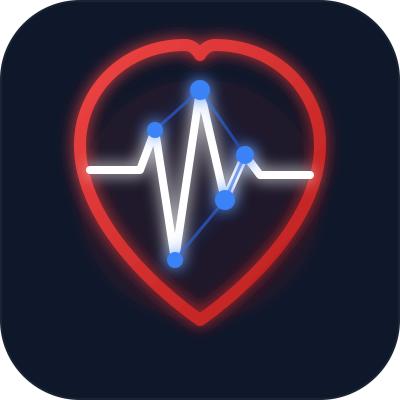

CardioIAPlataforma de Inteligência Cardíaca Total
Integração transdisciplinar conectando monitoramento de sensores IoT em MicroPython, processamento de API FastAPI, Machine Learning preditivo e orquestração de multiagentes de saúde.
A inteligência preditiva foi construída e consolidada na fase anterior através da modelagem estatística de predição de risco e a colaboração inteligente entre agentes autônomos.
Foco: Classificadores de Machine Learning (RandomForest), governança clínica e orquestração baseada em handoffs (OpenAI Agents SDK).
A materialização do ecossistema integrando o monitoramento biométrico local à interface médico-paciente final em tempo real.
Foco: Captura física por firmware ESP32 em MicroPython, gateway FastAPI unificador, e layouts responsivos Web (Vercel) e Mobile (EAS Build APK).
* **CI/CD Integrado:** Conectado ao repositório do GitHub, disparando novos builds automaticamente a cada commit na branch main.
* **Roteamento SPA:** vercel.json configurado com regras de reescrita para index.html para evitar erros 404 em rotas internas do React.
* **Build na Nuvem:** Configuração do eas.json no perfil preview permitindo compilar o app nativo do Android em segundo plano sem SDK local.
* **Distribuição APK:** Geração do executável .apk direto em nuvem, permitindo a instalação via escaneamento do QR Code.